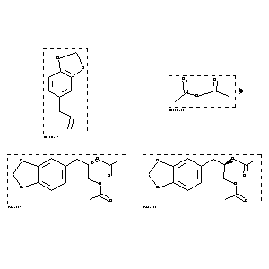

|  |
| FA | RX(1); FLST(1); RX(1) |
Reaction (1 of 1)
| Reaction ID | 4928009 |
| Reactant BRN | 136380; 385737 |
| Reactant | 5-allyl-benzo[1,3]dioxole; acetic acid anhydride |
| Product BRN | 8041917; 8041916 |
| Product | acetic acid 1-acetoxymethyl-2-benzo[1,3]dioxol-5-yl-ethyl ester; (R)-(-)-5-(2,3-diacetoxypropyl)-1,3-benzodioxole |
| No. of Reaction Details | 1 |
Reaction Details (1 of 1)
| Reaction Classification | Preparation |
| Reagent | 1.) AD-mix-b, methanesulfonamide, H2O, 2.) pyridine |
| Other Conditions | 1.) t-BuOH, 0 deg C, 30 h, 2.) 25 deg C, 12 h |
| Comment | Yield given. Multistep reaction. Yields of byproduct given. Title compound not separated from byproducts |
| Citation Pointer | 6100568; Journal; Mohan, H. Rama; Rao, A. S.; IJSBDB; Indian J.Chem.Sect.B; EN; 37; 1; 1998; 78-79; |
Reference (1 of 1)
| Citation Number | 6100568 |
| Document Type | Journal |
| Authors | Mohan, H. Rama; Rao, A. S. |
| CODEN | IJSBDB |
| Journal Title | Indian J.Chem.Sect.B |
| Language Code | EN |
| (Series) Volume | 37 |
| Number | 1 |
| Publication Year | 1998 |
| Page | 78-79 |